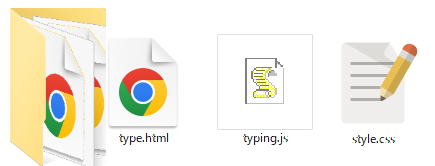
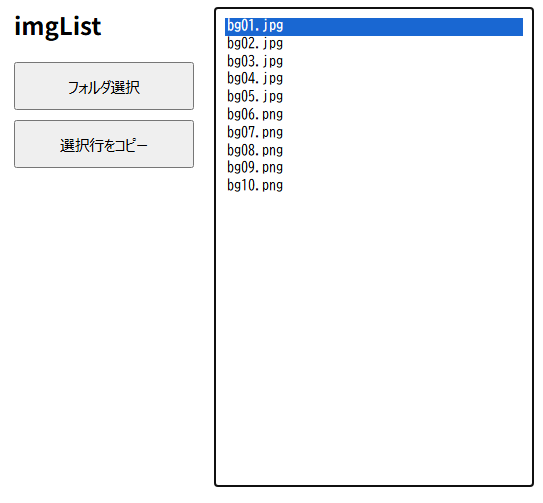
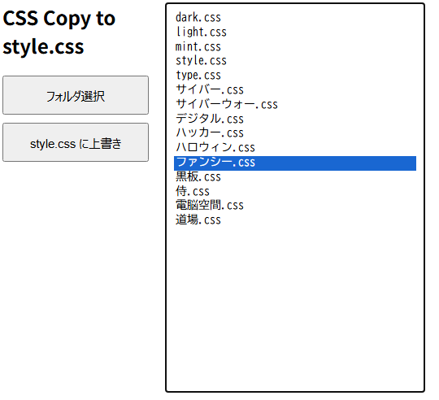
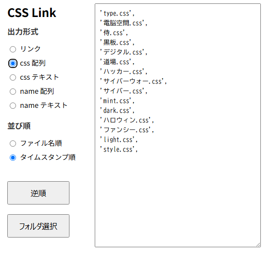
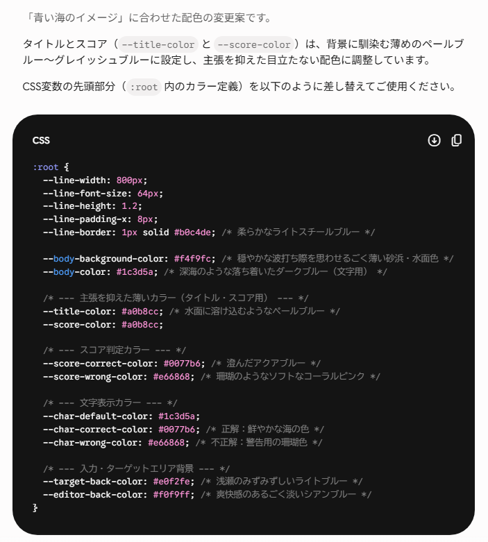
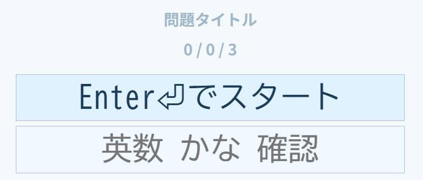

タイピング練習のテーマを作成
ローカルに作成したタイピング練習のテーマを変更できます。テーマ変更のサンプル
タイピング練習のフォルダを作る。
＞type.html 問題のテンプレート
＞typing.js スクリプト
＞style.css スタイルシート
＞type.css 背景画像ありスタイルシート

style.css type.css を編集する。
フォルダ内の画像ファイルのリスト作成

フォルダ内のCSSファイルをstyle.cssに上書きする

フォルダ内のCSSファイルのリスト作成

AIでCSSの作成


